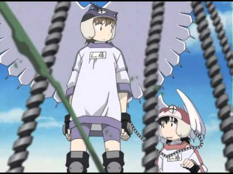

I had never heard of "Alien Nine." There's a good chance you haven't heard of it either. The first I had ever heard of it was by watching promotional trailers included in a rare DVD of "Cat Soup," a bizarre experimental short fil released in North America by Central Park Media, a company that went bankrupt nearly a decade ago. The trailer suggested "Alien Nine" was a peppy sci-fi show set in a Japanese school, where girls fight aliens across the school grounds, set against a standard pre-2000 JPOP theme. But the alien designs and the animation was so bizarre, and of surprisingly high quality, that it immediately grabbed my attention. Under such conditions, one would expect no streaming service to host the show, and the DVDs to be long out of print, but I was able to find the complete four-episode OVA series, new, for under $20. It was a magical moment for me: even after decades of watching, anime always finds a way to surprise.Poor Yuri is having a tough start to the school year. Her 6th grade class has voted her to be the class representative for the "Alien Party" club, joining two other students and a club counsellor. This is an alternate present-day Japan where alien ships crash onto the campus grounds almost everyday, and it's become an accepted part of life that the student volunteers have to round up the creatures. Don't kill them, for they're living beings too, even if they are trying to bite your face off! To help with the task, each of the three girls are provided an alien parasite called a "Borg," round creatures that unhinge their jaw around a human's head to look like a helmet with eyes and wings, providing the human with the Borg's abilities of strength and movement. The Borg just has to lick the girls' skin each night for nourishment. Naturally, Yuri doesn't like this at all, partially for her disgust of aliens, and partially fear and lack of confidence in herself. Moments in the story also strongly hint at the human counsellors being involved in the alien attacks in the first place. The story isn't complete: only covering about half of the original manga, the anime offers more questions than answers. Central Park Media even sold a pack with both the anime and manga together, hoping to satisfy confused viewers. But even though we never know why the aliens come, this is a compelling story thanks to the emotional trauma the characters are put through. Yuri's timid nature puts her and her team in danger, and for unknown reasons, her internal emotions are transmitted to the other two girls, affecting them too. It isn't just a fear of alien monsters: as frustrating as it is at first, Yuri's emotional state seems to represent her fear of people in general, and of a greater fear of growing up and becoming an adult. Kumi and Kasumi, the other two girls, each have their own demons to work through. And instead of overcoming it, by the end of the anime, they are more worried than ever, with things worse off than before. Its representative, and some of the horrors they go through is truely traumatic. I'm talking "Evangelion" and "Madoka Magica" -level stuff here. Even in its incomplete state, the story is that compelling and revolutionary. The visuals and animation might seem dated at first, with rounded and cute faces for the human characters. It excels beyond that entirely thanks to the alien designs, and the animation of the aliens. The designs seem to favor spindlely-tentacles and large arms, massive mouths and tounges. The Borgs themselves have metal-like tendrils that can impale their enemy when the human host is in danger, or can otherwise use these as spider-legs to scale along walls. When in motion (and action takes up most of the series), it rivals anime feature films from the time, and some of the imagery, disturbing as it might be, is memorable and haunting. The type of imagery that a friend might have a poster of in their bedroom, begging one to ask "what's wrong with you" before going out and getting a poster yourself. Unfortunately, the music isn't particularly impressive against the story, and true to English dubs of the early-2000's, the dub isn't very good. It's hard to hit everything out of the park, but this reminds one that "Alien Nine" isn't a perfect series, as impressive as some elements might be.How "Alien Nine" hasn't been more widely accepted as a classic, rather than a secret cult classic, is beyond me. If with the same design sensibilities, I would love to see a remake or reboot to tell the whole tale, perhaps as a film series. But it might just serve to spoil how impressive the original OVA was. Seek it out, before the DVDs really do become hard to find.
- "Ani" More reviews can be found at : https://2danicritic.github.io/ Previous review: review_Alice_in_Wonderland Next review: review_All_Dogs_Go_To_Heaven